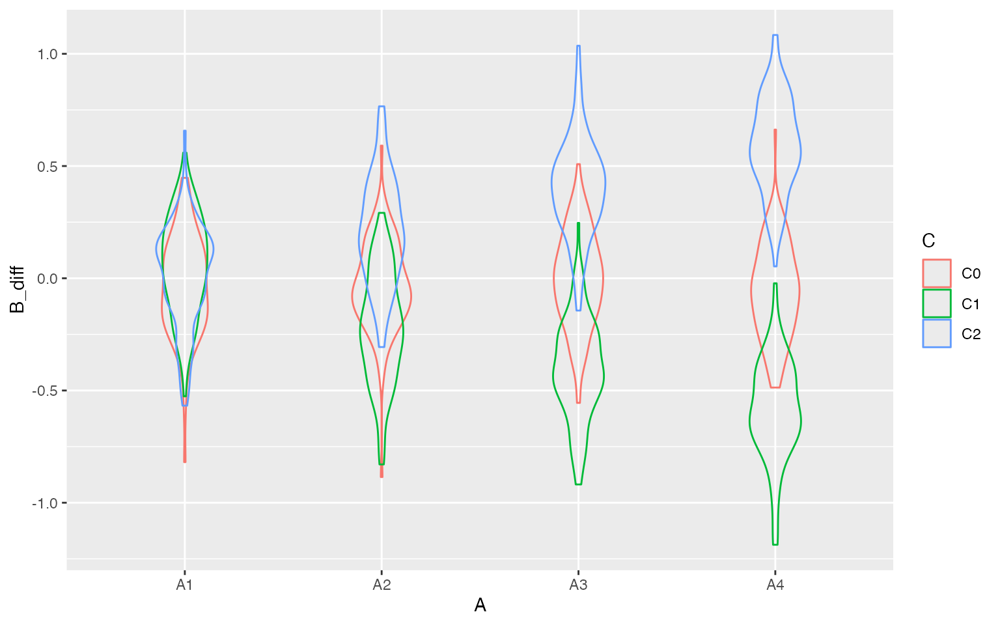

How do you test a specific hypothesis for a complex hypothesis, such as a 4x3x2 mixed-design ANOVA? For example, suppose you have a hypothesis about two within-subject factors (A and B) in three between-subject conditions (control, C1 and C2). You predict that there will be no effects of A or B (and no interaction) in the control condition, an effect of B only on A1 in the first experimental condition, and an effect of B only on A2 in the second experimental condition.
The point of this tutorial is to show just how complex the decision criteria can be for an interaction. I don’t think I’ve chosen ideal criteria, but this is a model for how to start thinking about how you’d specify hypothesis corroboration criteria that are more sophisticated than just “predict a significant 3-way interaction”.
Packages Used
suppressPackageStartupMessages({
library(scienceverse)
library(faux)
library(afex)
library(dplyr)
library(tidyr)
library(ggplot2)
})
scienceverse_options(verbose = FALSE)Test Data Simulation
First, simulate some data so you can build your analysis structure.
I’ve built in a pretty big interaction, with nothing at all going on in
the control condition, and opposite interactions among the
within-subject factors in experimental conditions 1 and 2. There are 20
observations (n) in each between cell. Check the
dat <- faux::sim_design(
within = list(A = c("A1", "A2", "A3", "A4"),
B = c("B1", "B2")),
between = list(C = c("C0", "C1", "C2")),
n = 20,
# A1_B1, A1_B2, A2_B1 ... A4_B2
mu = c(0, 0, 0, 0, 0, 0, 0, 0, # C0
0, 0, .2, 0, .4, 0, .6, 0, # C1
0, 0, 0, .2, 0, .4, 0, .6), # C2
sd = 1,
r = 0.5,
id = "sub_id",
dv = "score",
long = TRUE)
Test analysis
I’m using the afex::aov_ez() function to run an ANOVA.
This maps on pretty straightforwardly to the way you simulate the data
in {faux}.
# run ANOVA
omnibus <- afex::aov_ez(id = "sub_id",
dv = "score",
between = "C",
within = c("A", "B"),
data = dat,
return = "afex_aov")## Contrasts set to contr.sum for the following variables: C{scienceverse} requires any numbers you use from an analysis to be returned as a named list, and we only care about the 3-way interaction for this study, so we’ll use {dplyr} and {tidyr} to get just the values we want.
# get stats for 3-way interaction
ixn <- anova(omnibus)["C:A:B", ]
# calculate group means
means <- group_by(dat, A, B, C) %>%
summarise(m = mean(score), .groups = "drop") %>%
tidyr::unite("grp", A, B, C)
m <- means$m
names(m) <- means$grp
list(
p = ixn$`Pr(>F)`,
F = ixn$F,
means = m
) %>% str()## List of 3
## $ p : num 0.00134
## $ F : num 3.92
## $ means: Named num [1:24] 0.2259 0.1663 0.2055 -0.0404 0.0899 ...
## ..- attr(*, "names")= chr [1:24] "A1_B1_C0" "A1_B1_C1" "A1_B1_C2" "A1_B2_C0" ...Now you might also want to do some analyses to check that the pattern of any significant 3-way interaction is consistent with your hypothesis.
aov_control <- afex::aov_ez(id = "sub_id",
dv = "score",
within = c("A", "B"),
data = filter(dat, C == "C0"),
return = "afex_aov")
aov_c1 <- afex::aov_ez(id = "sub_id",
dv = "score",
within = c("A", "B"),
data = filter(dat, C == "C1"),
return = "afex_aov")
aov_c2 <- afex::aov_ez(id = "sub_id",
dv = "score",
within = c("A", "B"),
data = filter(dat, C == "C2"),
return = "afex_aov")
list(
control = anova(aov_control)["A:B", "Pr(>F)"],
cond1 = anova(aov_c1)["A:B", "Pr(>F)"],
cond2 = anova(aov_c2)["A:B", "Pr(>F)"]
) %>% str()## List of 3
## $ control: num 0.517
## $ cond1 : num 7.82e-05
## $ cond2 : num 0.723Set up Scienceverse study
Set up the study by adding simulated data (use the argument from
faux::sim_design() above), the analyses above (make sure to
add the library calls at the start of the analysis code or preface each
function with the package name).
s <- study("Demo") %>%
add_sim_data(data_id = "dat",
within = list(A = c("A1", "A2", "A3", "A4"),
B = c("B1", "B2")),
between = list(C = c("C0", "C1", "C2")),
n = 20,
# A1_B1, A1_B2, A2_B1 ... A4_B2
mu = c(0, 0, 0, 0, 0, 0, 0, 0, # C0
0, 0, .2, 0, .4, 0, .6, 0, # C1
0, 0, 0, .2, 0, .4, 0, .6), # C2
sd = 1,
r = 0.5,
id = "sub_id",
dv = "score",
long = TRUE) %>%
add_analysis("ANOVA", code = {
library(dplyr) # add for pipes
# run ANOVA
omnibus <- afex::aov_ez(id = "sub_id",
dv = "score",
between = "C",
within = c("A", "B"),
data = dat,
return = "afex_aov")
# get stats for 3-way interaction
ixn <- anova(omnibus)["C:A:B", ]
# calculate group means
means <- group_by(dat, A, B, C) %>%
summarise(m = mean(score), .groups = "drop") %>%
tidyr::unite("grp", A, B, C)
m <- means$m
names(m) <- means$grp
list(
p = ixn$`Pr(>F)`,
F = ixn$F,
means = m
)
})Check the analysis works.
study_analyse(s) %>% get_result()## Contrasts set to contr.sum for the following variables: C## * p: 0.0266132
## * F: 2.4877548
## * means:
## * A1_B1_C0: -0.1337731
## * A1_B1_C1: 0.1267129
## * A1_B1_C2: 0.0862133
## * A1_B2_C0: 0.1689413
## * A1_B2_C1: -0.0306296
## * A1_B2_C2: -0.0097975
## * A2_B1_C0: -0.4170866
## * A2_B1_C1: 0.5754561
## * A2_B1_C2: 0.0971473
## * A2_B2_C0: 0.1441423
## * A2_B2_C1: 0.1385843
## * A2_B2_C2: 0.4122881
## * A3_B1_C0: -0.1840667
## * A3_B1_C1: 0.590779
## * A3_B1_C2: -0.2317178
## * A3_B2_C0: -0.1017749
## * A3_B2_C1: 0.1340324
## * A3_B2_C2: 0.3220298
## * A4_B1_C0: -0.1415867
## * A4_B1_C1: 0.3902043
## * A4_B1_C2: -0.0509695
## * A4_B2_C0: -0.4350458
## * A4_B2_C1: -0.0131861
## * A4_B2_C2: 0.6406034Add the extra analyses. They can go in the code of the main analysis and their results can be added to the returned list, or they can be added as separate analysis objects.
s <- s %>%
add_analysis("C0", code = {
# run ANOVA
aov_c <- afex::aov_ez(
id = "sub_id",
dv = "score",
within = c("A", "B"),
data = dplyr::filter(dat, C == "C0"),
return = "afex_aov")
# get stats for 2-way interaction
ixn <- anova(aov_c)["A:B", ]
list(
p = ixn$`Pr(>F)`,
F = ixn$F
)
}) %>%
add_analysis("C1", code = {
# run ANOVA
aov_c <- afex::aov_ez(
id = "sub_id",
dv = "score",
within = c("A", "B"),
data = dplyr::filter(dat, C == "C1"),
return = "afex_aov")
# get stats for 2-way interaction
ixn <- anova(aov_c)["A:B", ]
list(
p = ixn$`Pr(>F)`,
F = ixn$F
)
}) %>%
add_analysis("C2", code = {
# run ANOVA
aov_c <- afex::aov_ez(
id = "sub_id",
dv = "score",
within = c("A", "B"),
data = dplyr::filter(dat, C == "C2"),
return = "afex_aov")
# get stats for 2-way interaction
ixn <- anova(aov_c)["A:B", ]
list(
p = ixn$`Pr(>F)`,
F = ixn$F
)
})Check the new analyses works.
s <- study_analyse(s) ## Contrasts set to contr.sum for the following variables: C
get_result(s, analysis_id = "C0")## * p: 0.100249
## * F: 2.242503
get_result(s, analysis_id = "C1")## * p: 0.7597787
## * F: 0.3556755
get_result(s, analysis_id = "C2")## * p: 0.0492075
## * F: 2.8592385Add a hypothesis, specify criteria, and add evaluation rules You can add rules for both “corroboration” and “falsification”, but here we just have corroboration rules.
s <- s %>%
add_hypothesis("IXN", "There will be a significant 3-way interaction among factors A, B and C") %>%
# C:A:B interaction significant
add_criterion("sig_ixn",
result = "p",
operator = "<",
comparator = 0.05,
analysis_id = "ANOVA") %>%
# add criteria to show the pattern is as expected
# A1 < A2 < A3 < A4 from B1 in C1
add_criterion("c1_1",
result = "mean$A1_B1_C1",
operator = "<",
comparator = "mean$A2_B1_C1",
analysis_id = "ANOVA") %>%
add_criterion("c1_2",
result = "mean$A2_B1_C1",
operator = "<",
comparator = "mean$A3_B1_C1",
analysis_id = "ANOVA") %>%
add_criterion("c1_3",
result = "mean$A3_B1_C1",
operator = "<",
comparator = "mean$A4_B1_C1",
analysis_id = "ANOVA") %>%
# A1 < A2 < A3 < A4 from B2 in C2
add_criterion("c2_1",
result = "mean$A1_B2_C2",
operator = "<",
comparator = "mean$A2_B2_C2",
analysis_id = "ANOVA") %>%
add_criterion("c2_2",
result = "mean$A2_B2_C2",
operator = "<",
comparator = "mean$A3_B2_C2",
analysis_id = "ANOVA") %>%
add_criterion("c2_3",
result = "mean$A3_B2_C2",
operator = "<",
comparator = "mean$A4_B2_C2",
analysis_id = "ANOVA") %>%
# all criteria must be true to corroborate
add_eval(type = "corroboration",
evaluation = "sig_ixn & c1_1 & c1_2 & c1_3 & c2_1 & c2_2 & c2_3")Run power simulation
Running study_power() returns a study object that has
rep values stored for the analysis criteria and
evaluations. get_power() returns the evaluation for each
hypothesis and, optionally, the results values for each analysis.
s <- study_power(s, rep = 100)## Warning in study_power(s, rep = 100): Hypothesis IXN has no evaluation criteria
## for falsification
power <- get_power(s, values = TRUE)
str(power$power)## List of 1
## $ IXN:List of 3
## ..$ corroboration: num 0.5
## ..$ falsification: num 0
## ..$ inconclusive : num 0.5Plot the resulting values
data.frame(
ixn = power$results$ANOVA$p,
c0 = power$results$C0$p,
c1 = power$results$C1$p,
c2 = power$results$C2$p
) %>%
gather("analysis", "p", ixn:c2) %>%
ggplot(aes(x = p, fill = analysis)) +
geom_histogram(binwidth = 0.05, color = "black",
boundary = 0, show.legend = FALSE) +
facet_grid(~analysis) +
xlab("p-values")
t(power$results$ANOVA$means) %>%
as.data.frame() %>%
pivot_longer(
cols = A1_B1_C0:A4_B2_C2,
names_to = c("A", "B", "C"),
names_sep = "_",
values_to = "mean"
) %>%
ggplot(aes(x = A, y = mean, colour = B)) +
geom_violin(alpha = 0.5, position = position_dodge(width = 0)) +
facet_grid(C~.)
t(power$results$ANOVA$means) %>%
as.data.frame() %>%
mutate(rep = row_number()) %>%
pivot_longer(
cols = A1_B1_C0:A4_B2_C2,
names_to = c("A", "B", "C"),
names_sep = "_",
values_to = "mean"
) %>%
pivot_wider(
names_from = B,
values_from = `mean`
) %>%
mutate(B_diff = B2 - B1) %>%
ggplot(aes(x = A, y = B_diff, colour = C)) +
geom_violin(alpha = 0, position = position_dodge(width = 0))